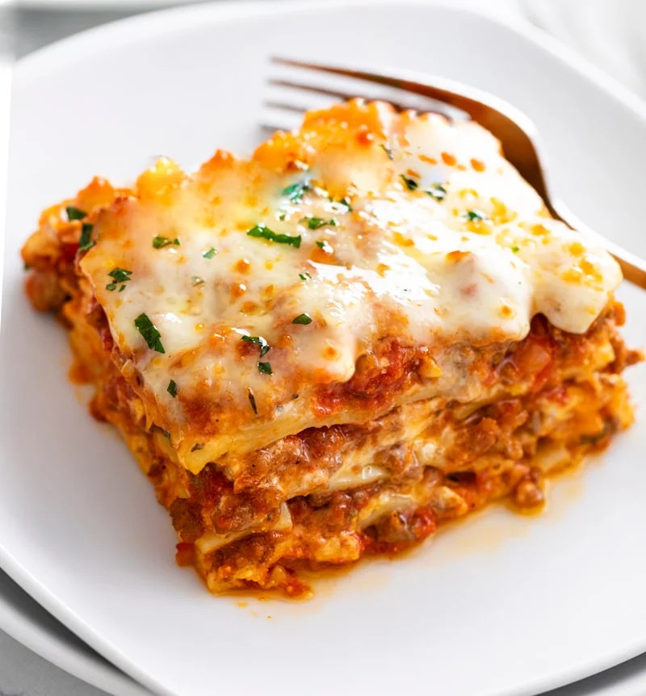

Lasagna

The Savory History of Lasagna
When was lasagna invented? The Italian favorite of lasagne or lasagna that
we all know and love originated in Italy in the city of Naples during the
Middle Ages. One of the first references to modern-day lasagne can be
found in a 14th-century English cookbook that highlighted a dish with
layers of pasta without the tomatoes. Later, another reference was made to
lasagne in an Italian cookbook in the 1880s that featured tomato sauce.
The dish eventually evolved into the traditional lasagna of Naples called
eme“Lasagna di Carnevale” made with local sausage, fried
meatballs, hard-boiled eggs, ricotta or mozzarella, and Neapolitan Ragu.
One of the most popular variations of this lasagna dish is called
“Lasagna al Forno.” This variation originates from the Italian
region of Emilia-Romagna and is made with ricotta or mozzarella, thick
Ragu, bechamel sauce, wine, onion, oregano, and green sheets of pasta made
with spinach. Lasagne’s history wouldn’t be complete without variety
throughout the regions of Italy. Different areas may use different dough
or sauces. The beautiful Italian region of Piedmont specializes in lasagna
al Sangue, which translates to “bloody lasagne” due to the
addition of blood from a slaughtered pig.
Ingredients
- 9 lasagna noodles
- 1-1/4 pounds bulk italian sausage
- 3/4 pound ground beef
- 1 medium onion, diced
- 1 medium onion, diced
- 3 garlic cloves, minced
-
2 cans (one 28 ounces, one 15 ounces)
crushed tomatoes
- 2 cans (6 ounces each) tomato paste
- 2/3 cup water
- 2 to 3 tablespoons sugar
- 3 tablespoons plus 1/4 cup minced fresh parsley, divided
- 2 teaspoons dried basil
- 3/4 teaspoon fennel seed
- 3/4 teaspoon salt, divided
- 1/4 teaspoon coarsely ground pepper
- 1 large egg, lightly beaten
- 1 carton (15 ounces) ricotta cheese
- 4 cups shredded part-skim mozzarella cheese
- 3/4 cup grated Parmesan cheese
Steps
- Cook noodles according to package directions; drain. Meanwhile, in a Dutch oven, cook sausage, beef and onion over medium heat 8-10 minutes or until meat is no longer pink, breaking up meat into crumbles. Add garlic; cook 1 minute. Drain.
- Stir in tomatoes, tomato paste, water, sugar, 3 tablespoons parsley, basil, fennel, 1/2 teaspoon salt and pepper; bring to a boil. Reduce heat; simmer, uncovered, 30 minutes, stirring occasionally.
- In a small bowl, mix egg, ricotta cheese and remaining 1/4 cup parsley and 1/4 teaspoon salt.
- Preheat oven to 375°. Spread 2 cups meat sauce into an ungreased 13x9-in. baking dish. Layer with 3 noodles and a third of the ricotta mixture. Sprinkle with 1 cup mozzarella cheese and 2 tablespoons Parmesan cheese. Repeat layers twice. Top with remaining meat sauce and cheeses (dish will be full).
- Bake, covered, 25 minutes. Bake, uncovered, 25 minutes longer or until bubbly. Let stand 15 minutes before serving.